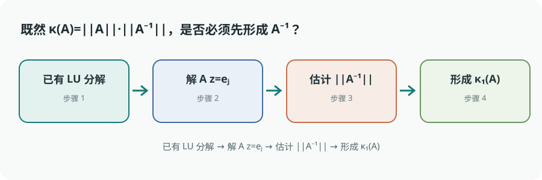

CHAPTER 2 · LINEAR EQUATION SOLVING
怎样估计条件数，而不显式求出整个逆矩阵
从定义出发，区分精确小规模诊断和大型系统的逆范数估计器。
矩阵条件数越大，解可能对输入扰动越敏感。但求出完整逆矩阵可能比已有 LU 分解后多次三角求解更昂贵，也会引入额外误差。常用数值库不必显式形成 A⁻¹ 就能估计它的范数；在小矩阵上，我们还可以使用基向量求解构造可检查的参考量。
既然 κ(A)=||A||·||A⁻¹||，是否必须先形成 A⁻¹？

1. 一范数与逆矩阵列和
矩阵的一范数 ||A||₁ 等于各列绝对值和的最大值。对非奇异 A，κ₁(A)=||A||₁||A⁻¹||₁。因为 A⁻¹ 的第 j 列恰是线性系统 A z=e_j 的解，求解所有 n 个单位基向量就能计算 ||A⁻¹||₁，而不必调用显式逆函数。
但这个做法需要 n 次求解：已经有 LU 因子时仍需总计 O(n³) 量级的三角求解工作。它只适合教学/小规模验证，不能冒充快速条件数估计器。
来源：Demmel, Applied Numerical Linear Algebra §2.4.3；LAPACK gesvx reciprocal condition estimate；NumPy condition number。
2. 真正的估计器通过少数求解探测危险方向
现代 1-范数估计方法（如 Hager/Higham 类估计）用少量 A 和 Aᵀ 方向的线性求解构造对 ||A⁻¹||₁ 的估计，不显式形成全部 n 列。实作通常还包含符号向量、迭代更新和停止规则，不应把简单的“两次求解”误写成完整 Hager 算法。
已有 LU 因子时，每次调用 A⁻¹ v 或 A⁻ᵀ v 都可以复用三角求解。估计器返回的是估计值，不是严格保证等于精确条件数。可用官方 LAPACK 的条件数估计接口进行工程交叉检查。
3. 条件数和矩阵尺度
对 A=diag(1,10⁻⁶)，一范数条件数为 10⁶；如果把整个 A 乘以常数 c，κ₁(cA)=κ₁(A)。这反映条件数描述的是相对放大而非矩阵绝对大小。
不过，单独缩放行和列可以改变常用范数下的条件数，也会改变求解器的数值工作状况；这种缩放不能自动修正全部建模误差。
4. 参考值与近似估计应分开报告
程序使用 NumPy solve 分别求解 A z=e_j，累积列绝对值和，从而获得 κ₁(A) 的教学参考值；然后与 numpy.linalg.cond(A,p=1) 对照。该方法未构成高效大型条件数估计器。
若需要可扩展工程估计器，应使用 LAPACK 或 SciPy 的相应接口，并报告使用的范数与估计方法。本文不虚构某个估计器的误差百分比或性能提升。
交互判断：既然 κ(A)=||A||·||A⁻¹||，是否必须先形成 A⁻¹？
切换情形，对照模型假设与结论。
A=I：κ₁(A)=1，对所有向量的相对放大一致。